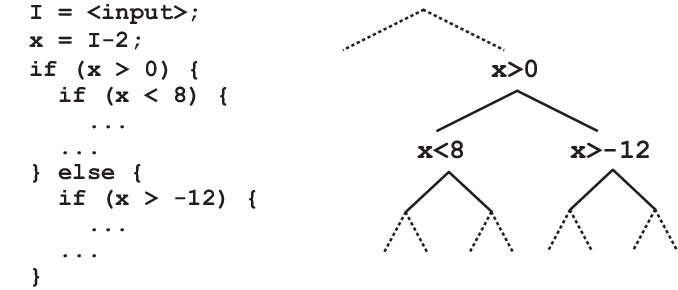

背景
程序 = 状态机
- 程序执行 (进程) = 状态机上的路径
进程 (状态机) 管理的 API
- fork - 复制
- execve - 重置
- exit - 终止
本次课内容与目标
理解 “文件描述符”
- 进程作为 “状态机” 持有的操作系统对象
了解状态机 API 的应用
- fork() 的使用
- A
fork()in the road
进程、状态机和文件描述符
进程：虚拟化的状态机
计算机系统的状态 $(M_s, R_s)$ 包含
- 进程的状态 $(M_1, R_1)$, $(M_2, R_2)$, ...
- 虚拟存储可以 “伪装” $(M_i, R_i)$ 在机器上执行
- 操作系统的状态 (剩下的全部)
- 中断后进入操作系统代码执行
- 可以在操作系统里可以建立各种对象
- 进程不可见，但可以通过 syscall 访问
进程状态：不只是内存和寄存器
进程还需要访问操作系统中的对象。
UNIX: Everything is a file!
- 操作系统里的对象都是文件
/dev/random/dev/sda/proc/[pid]/maps
- 进程持有 “
文件描述符 ” 作为指向操作系统对象的指针- open 返回文件描述符
- read, write 改变文件描述符
文件描述符
Everything is a file → “Everything 描述符”
- 一个 small integer
- 0 - stdin
- 1 - stdout
- 2 - stderr
- 其他由 open 创建 (总是返回最小的可用编号)
- “补完” 了操作系统视角的进程状态
例子：备份 stdout
- OI 选手最爱的
freopen("a.txt", "w", stdout);- 如何找回丢失的 stdout?
- stdout-bak.c
文件描述符 (cont'd)
想看看进程打开了什么文件？
- 当然可以了！
ls -l /proc/[pid]/fd
- 那既然可以 pstree，有没有 fdgraph?
- 有！
lsof -p pid有惊喜- 不仅列出了 0, 1, ...，还列出了隐性持有的文件描述符
- (进程持有的所有操作系统对象！)
- 有！
文件描述符和 fork
fork()时进程的所有文件描述符会被子进程继承。
一个非常精巧的设计！
./a.out- 无论创建多少子进程，都会输出到同一个终端
这件非常自然的事情其实并不 trivial
等等……
- 父子进程同时写文件，会不会被覆盖？
状态机上的魔法
还记得状态机的那些魔法吗？
void f(int x, int y) {
int z = x * y;
if (z == 18) {
bug();
}
}
int main() {
int x = nondet(), y = x * 2;
f(x, y);
}
执行一次程序，可以得到一条路径
- 如果我想换一条路径呢？
- C. Cadar, D. Dunbar, D. Engler. KLEE: Unassisted and automatic generation of high-coverage tests for complex systems programs. In Proc. of OSDI, 2008.
深度优先的的路径搜索：回溯太麻烦？

int dfs(int pc) {
try_true_branch(pc); restore();
try_false_branch(pc); restore();
}
int dfs_fork(int pc) {
if ((pid = fork()) == 0) try_true_branch(pc);
else try_false_branch(pc);
}
Fork: 跳过初始化
假设你实现的 NEMU 需要启动很多份
./nemu dummy.elf./nemu add.elf./nemu add-longlong.elf...- 而你的 NEMU 实现初始化又需要很长的时间？
int main() {
nemu_init(); // only once
while (1) {
file = get_start_request();
if ((pid = fork()) == 0) {
// bad practice: no error checking
load_file();
}
...
Fork: 跳过初始化
典型的例子
- Zygote Process (Android)
- Java Virtual Machine 初始化涉及大量的类加载
- 一次加载，全员使用
- App 使用的系统资源
- 基础类库
- libc
- ...
- Chrome site isolation (Chrome)
- Fork server (AFL)
Fork: 实现 “备份” 的容错
定期给程序做备份性质的快照
- 但 fork 之后就在那里等着
- 如果主进程 crash 了，启动快照重新执行
- F. Qin, et al. Rx: Treating bugs as allergies--A safe method to survive software failures. In Proc. of SOSP, 2005.

计算机系统里没有魔法。机器永远是对的。

A fork() in the road (HotOS'19)
创建进程：Fork-Execve
int fork();
int execve(char *filename, char * argv, char * envp);
Fork: 更好上手，但暗藏杀机 (printf; 线程; ...)
- 系统随着时间演化，无法保持简洁
- 文件描述符需要复制 (offset?)
- 你没考虑过的：信号？内存映射？IPC？ptrace？……
创建进程：POSIX Spawn
int posix_spawn(pid_t *pid, char *path,
posix_spawn_file_actions_t *file_actions,
posix_spawnattr_t *attrp,
char * argv[], char * envp[]);
参数
pid: 返回的进程号path: 程序 (重置的状态机)file_actions: open, close, dupattrp: 信号、进程组等信息argv,envp: 同execve- 很明显：这是一个 “后设计” 的 API
A fork() in the Road
fork() 的七宗罪
- Fork is no longer simple.
- Fork doesn’t compose - 6 vs 8 的例子
- Fork isn’t thread-safe -
create()后fork()的难题 - Fork is insecure - 打破了 Address Space Layout Randomization
- Fork is slow - 的确……
- Fork doesn’t scale - 也是……
- Fork encourages memory overcommit - 呃……
提出的建议
- deprecate fork
- improve the alternatives
- fix our teaching
总结
总结
本次课内容与目标
- 理解 “文件描述符”
- 讨论 fork 的使用
Takeaway messages
- 从操作系统的角度，fork 不是 API 的最佳选择
- 从 “状态机” 的角度，“快照” 依然是个很有趣的操作
- spawn + snapshot